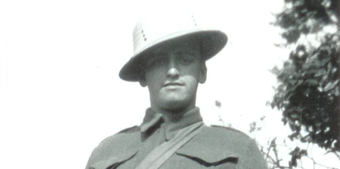
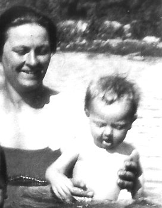

-
George William Thomas Henry Newbury ( b.1922 - d.1992 )


1922 JUN 26 : George was born in Toronto, Ontario. Canada
1944 JAN 28 : George married Irene Phyllis Gander in England
1992 FEB 17 : George passed away, he was 69 years old (cancer)
George is buried at the cemetery in Glenburnie
-
Raymond Albert Newbury ( b.1923 - d.1988 )
1923 DEC 25 : Raymond was born at home in Toronto, Ontario, Canada
1988 NOV 25 : Raymond passed away, he was 64 years old (heart attack)
Raymond is buried at the Cataraqui Cemetery
-
William Charles Newbury ( b.1925 - d.1993 )
1925 FEB 10 : William was born at home in Toronto, Ontario. Canada
1993 : William passed away at 30 Nelson St, he was 68 years old (cancer)
Bill is buried at the Cataraqui Cemetery
-
Thomas Henry Newbury ( b.1927 - d.1941 )

1926 NOV 5 : Thomas was born at home in Toronto, Ontario. Canada
1941 NOV 18 : Thomas passed away near Barriefield, he was 15 years old (diabetes)
Tommy is buried at the Cataraqui Cemetery
-
Shirley Alice Newbury ( born in 1928 )

1928 JUL 12 : Shirley was born at home in Toronto, Ontario. Canada
1951 JUL 09 : Shirley married William John Young ( b.1927 - d.2001 ) in Kingston
Shirley will be 82 years old this summer !
Shirley has been living at Rideaucrest since July 4th, 2010.
-
Elizabeth Caroline Newbury ( b.1930 - d.2010 )

1930 OCT 31 : Elizabeth was born at home in Toronto, Ontario. Canada
1949 APR 28 : Elizabeth married Robert Donald Kirkpatrick ( b.1925 - d.2002 ) in Toronto
2010 MAR 31 : Betty passed away at Extendacare, she was 79 years old (alzheimers)
-
Connie Sylvia Newbury ( b.1933 - d.1935 )
1933 : Connie was born at home in Toronto, Ontario. Canada
1935 MAY 12 : Connie passed away at home near Barriefield, she was 2 years old (pneumonia)
Connie is buried at the Cataraqui Cemetery